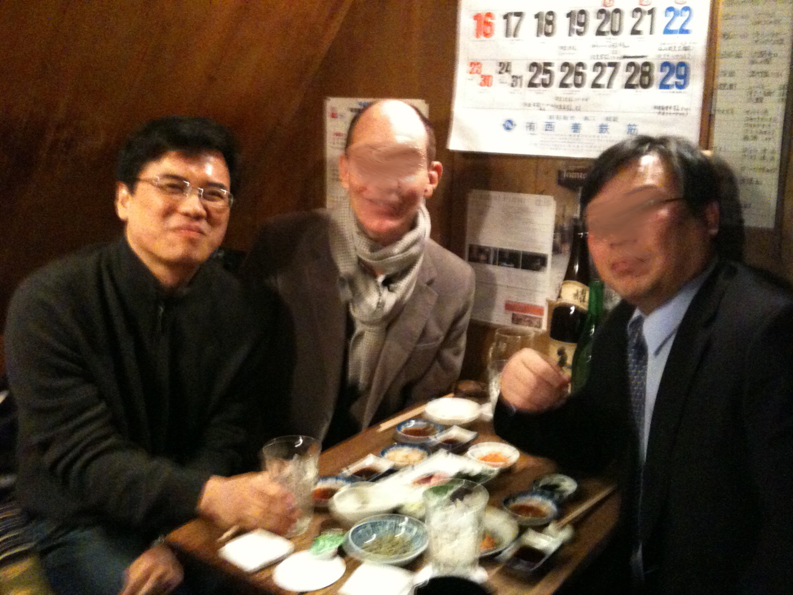
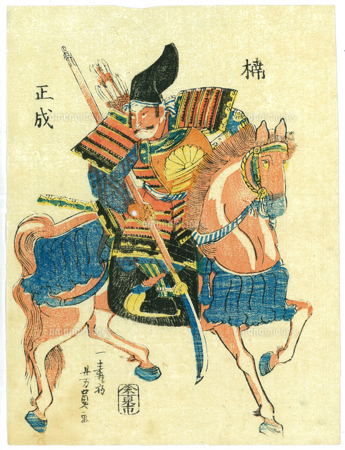
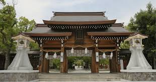
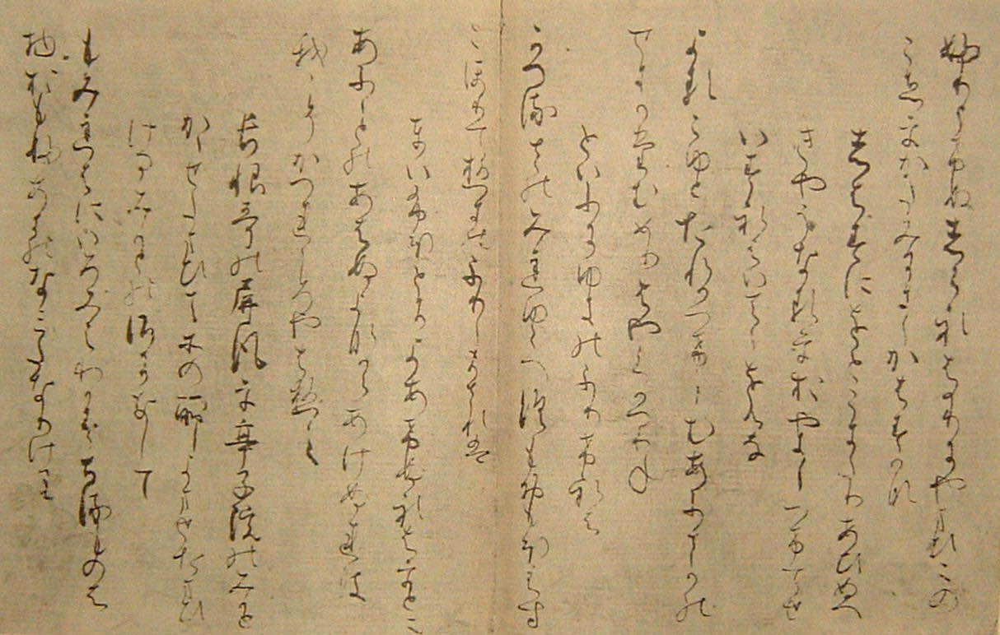

일본 유학 시절에 대해 간단히 말씀해주세요.
국내에서 대학원 생활을 끝내고, 유학을 가게 되었어요. 지도 교수님께서 졸업한 대학으로 가고 싶어서 동경대학교 초역문화연구과를 선택했습니다. 석박사 과정을 8년 정도 지냈어요.
조사하러 이곳저곳 많이 다녔는데 정말 재밌었어요. 특히 교수님께서 해외 조사 같은 걸 많이 데리고 가 주셨던 것이 좋았던 것 같습니다.

< 左:이충호 교수님, 中:이충호 교수님의 유학 시절 지도 교수님 >
해외에 유출된 일본 자료가 많아요. 당시에 해외 수집가들이 일본에 와서 자료를 수집하고, 해외 미술관이나 박물관에 기증한 게 많습니다.
그런 자료를 일본 학자들이 가서 정리하고 조사하는 게 있는데 거기에 연구 보조 요원으로 따라가고….
그래서 대학원 다닐 때 이탈리아도 가고, 미국도 가고, 독일도 가고…. 다양하게 조사하면서 많은 걸 배울 수 있었습니다. 그런 게 좋았어요.
그리고 이런 게 연결되어서 한국에 와서도 그런 해외 조사가 있으면 3~4년 정도 같이 조사하고 활동했어요.
시기 상 일본의 버블 경제 시기에 유학 가신 것 같은데, 유학 당시 일본의 상황이나 분위기가 어땠나요?
제가 유학 간 시기엔 버블 경제 시대가 끝나갈 때쯤이었어요. 제가 93년도에 대학에 입학했는데,
그때까지도 저희 입장에선 일본의 선진 문화. 그러니까 제이팝이라든지 일본의 트렌디한 드라마라든지.
그런 것을 동경했던 것도 같아요. 그래서 일본에서 살아보고 싶다, 일본에서 공부해보고 싶다고 생각했던 것 같아요. 지금은 많이 바뀌었죠.
일본에서 쓴 학위 눈문 주제가 무엇이었나요?

<쿠스노기 마사시게>
쿠스노기 마사시게(楠木正成)라는 유명한 무장이 있어요. 한국으로 치면 이순신 같은 인물이죠.
특이하게도 이 인물이 일본 황제를 위해 목숨을 바친 이야기로 굉장히 유명합니다. 그래서 태평양 전쟁 때까진 일본 교과서에도 다뤄지기도 하고…. 굉장히 숭상받는 인물이었어요.
그런데 일본이 패전하고 나선 교과서에서 사라지게 되었죠. 아무래도 일본 천황와 관련된 인물이니까요. 그래서 쿠스노기 마사시게에 대해 일본에 계신 교수님들께 이야기를 들어보면, 이름 들어본 적은 있는 정도에요.
인지도가 낮죠. 그런 무장을 주제로 박사 논문을 썼습니다. 연구실 문 옆 책꽂이에 꽂혀있는 책이 다 쿠스노기 마사시게와 관련된 책이에요.

<미나토가와 신사>
고베(神戸)에 가면 미나토가와(楠川) 신사라는 데가 있어요. 쿠스노키 마사시게를 모시는 신사인데, 옛날에 철도가 처음 생길 때,
미나토가와 신사 바로 앞에 고베역을 만들었어요. 지금도 역에서 도보로 200m정도 가면 신사가 있어요. 철도를 만들 때, 메이지 일본 천황가 쿠스노기 마사시게를 참배하기 위해서 미나토가와 신사를 철도역 바로 앞에 만든 거예요.
일본에서 논문을 쓸 때 직접 답사 다녀왔습니다.
논문 요약 pdf
CiNii: 박사논문 정보
유학 시절 스트레스를 받았을 때, 산책을 많이 했다고 하셨는데 그 코스에 대해 알고 싶습니다. 학교 주변이나 연구실 근처를 위주로 산책하셨나요?
학교나 도서관은 수업이나 자료 찾을 때만 갔고, 논문 같은 건 집에서 다 했어요. 특히 박사 논문 쓸 때는 학교도 안 가고 집에서 다 썼어요.
당시 저희 집이 이노가시라 공원(井の頭恩賜公園)이라고 도쿄의 키치조지(吉祥寺)에 있는 곳이었어요. 좀 유명한 곳이에요. 지브리 스튜디오가 있거든요. 볼 것도 많아요.
일본에서 살고 싶은 도시를 꼽으면 베스트 3위 정도에 들어가는 그런 곳이에요. 아무튼 저희 집에서 이노가시라 공원까지 천천히 걸어가면 거기까지 40~50분 정도 걸려요.
그러니까 천천히 산책하면서 걸어갔다가 이노가시라 공원에서 또 산책하고. 그렇게 갔다 오면 두 시간 정도. 그렇게 생각하면서 많이 산책했죠.
답사지 중에서 가장 기억에 남는 답사지는 어디인가요?
일본 시코쿠 카가와(香川) 현에 있는 코토히라(金刀比羅) 궁이 가장 기억에 남아요.
쿠스노키 마사시게와 관련된 작품을 찾는데, 그 작품 원본 중 한 권이 카가와 대학에 있었어요. 직접 보는 것이 좋을 것 같아서 조사하러 카가와현에 갔어요.
카가와현은 사누키(讃岐) 우동으로 유명하잖아요. 그래서 사누키 우동을 먹고 오후에 시간을 내서 유명하다는 코토히라궁에 갔죠. 코토히라 궁은 궁 아래 서원의 미닫이문에 그려진 그림으로 유명해요.
마루야마 오쿄(円山応挙)라는 에도시대 화가가 그린 호랑이 그림이에요. 또, 코토히라 궁 아래에 에도 시대 모습 그대로 남겨둔 일본의 전통 극장이 있어요. 그걸 직접 보고 싶었어요.
그래서 유학 중에 한 번 갔다가, 한 번 더 보고 싶어서 올해 7월에 집사람이랑 다녀왔어요. 부산 공항에서 그쪽으로 가는 직항이 생겼다고 해서 다시 방문했어요.
코토히라 궁이랑 카나마루자(金丸座)라는 카부키극장도 보고, 호랑이 그림도 봤습니다.
한국 대학원과 일본 대학원 두 대학원에는 어떤 차이점이 있나요?
일본이 어떤 주제에 대해 훨씬 좁고 깊게 연구하는 것 같아요. 한국에서는 호색오인녀라는 작품에 대해 연구한다면,
우키요조시(浮世草子)라는 하나의 소설 장르에 대해 주로 공부를 해요.
그런데 일본에서 연구하면 일본 국내에 자료가 다 있으니까, 한국에서 연구할 때보다 봐야 할 자료가 많아요. 자료가 많은 만큼 해야 할 것도 많습니다.
가장 힘들었고 시간이 많이 걸렸던 것은 활자화되지 않은 자료를 볼 때였어요. 활자화되지 않은 자료를 10명 정도에서 활자화하는 일을 쭉 했는데… 활자화가 안 된 자료는 읽는 데 시간도 오래 걸려요.
이걸 못 읽으면 거기서 연구가 끝나버리니까 지도 교수님께서 활자화가 안 된 일본 편지를 읽는 스터디를 해주셨어요. 10년 정도 스터디를 했는데 요즘은 AI도 곧잘 읽더라고요.

<활자화 되지 않은 가나 편지의 예시(伊勢集)>
하여튼 그런 부분에 깊이나 넓이의 차이가 있었던 것 같아요. 일본 사람에게 일문학은 국문학이잖아요. 그러니까 외국 사람이 연구한다고 했을 때 대충 연구하면 인정받지 못할 것으로 생각해서 더 깊게 연구했던 것 같아요.
또 저희 지도 교수님이 미국 분이었어요. 유학생 와리비키라고 유학생이면 좀 봐주는 부분이 있는데, 일본 분이었다면 유학생이라고 좀 봐주셨을지도 몰라요.
하지만 지도교수님께서 외국 분이셔서 본인도 유학생이셨고 그러니까 일본 학생과 저를 동등하게 대우를 해주셨어요. 유학생 와리비키 같은 게 없었던 게 오히려 좋았던 것 같아요.
연구원 생활을 관두고 교수가 된 계기가 무엇인가요?
30대 때 유학을 끝내고 부산외대에 오기 전에 3년 정도 연구원 생활을 했고, 20대엔 고려대에서 시간 강사를 1년 정도 했습니다. 연구원을 관두고 교수가 된 이유는 여러 가지가 있는데,
일단 연구원 자리는 계약직이었어요. 2년 단위로 계약이 바뀝니다. 그에 비해 교수직은 정년이 있으니까 더 안정적이죠. 그래서 옮기게 되었어요.